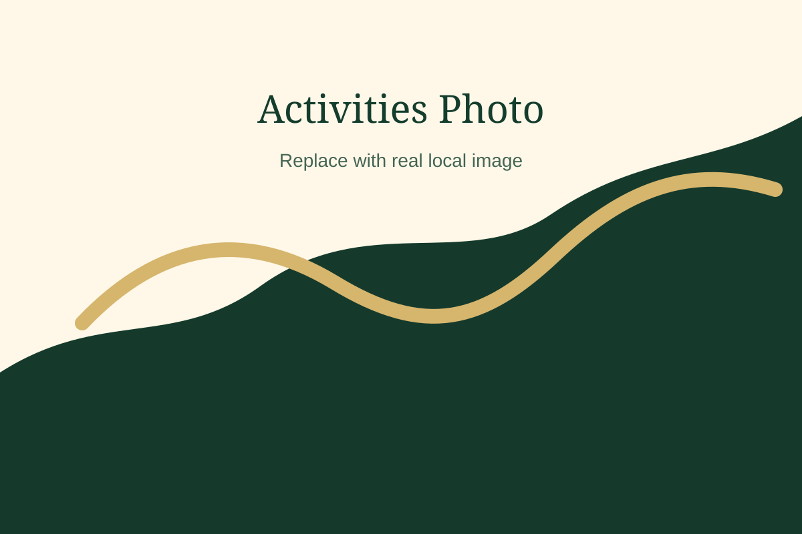
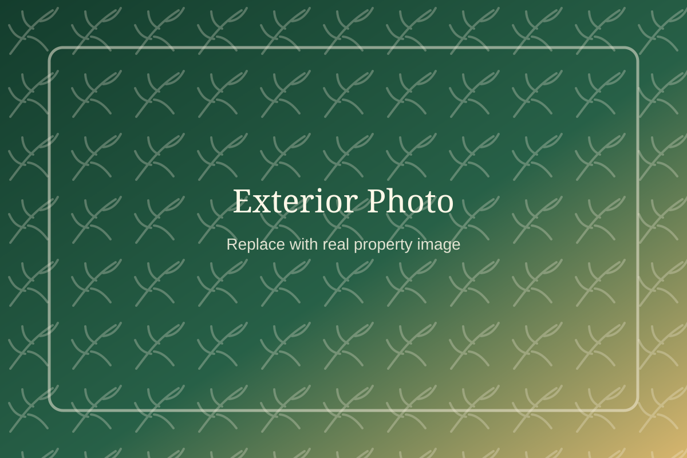

Explore
Explore Thekkady and Location
Use the property as a base for Kumily and Thekkady's nature, spice and visitor experiences. Confirm plans directly with the property or official providers.
Nature and Local Experiences
Thekkady is known for green landscapes, forest experiences, spice country and local visitor activities. Specific distances, timings and bookings should be verified before travel.
Safari arrangement enquiryCampfire enquiryIn-house Ayurvedic spa and massage

Government and eco-tourism programs
Programs and Nearby Experiences
THEKKADY FERN can help guests enquire about official and local visitor programs. Tickets, permits, operating days, reporting time, safety rules and final prices must be confirmed with the official portal or operator.
Property Location
Use the verified Google Maps link for directions to the property address.
J557+97H, Kottayam - Kumily Road, Chelimada, Kumily, Attappallam, Kerala 685509, India.
